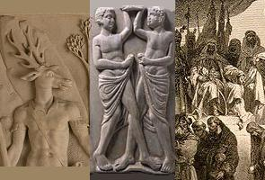

Listen to "The Twin" in English

XXV LE JUMEAU
Je te retrouve en l'abîme qui me ronge
Pour devenir le seul monde où je me tiens.
Poursuite inerte ou fausse piste du songe,
Suis-je Actéon que méconnaissent ses chiens?
Au fil des jours j'expertise le dédale.
Monstre celé, quand je vais mon besson git
Car nous n'avons qu'un oeil et qu'une sandale.
Celui qui dort doit surveiller le logis.
Je te dirai quel fut mon pèlerinage,
T'enchanterai de mes dits, de mes dédains,
Et de ma nuit surgira mon personnage
Opaque, plus que le sultan Saladin.
Michel Galiana (c) 1990
XXV THE TWIN BROTHER
You again! I encounter you in the chasm
That gnaws away at me, my sole abode surrounds.
Was it motionless hunt? Is it nightmare spasm?
Am I Actaeon who was torn by his own hounds?
A hiding freak, my twin brother lies when I go
And search, as time goes by, all the nooks of the maze.
For there are for us both only one eye, one shoe:
The one who sleeps must watch over the house, always.
I shall tell you some day what kind of quest was mine,
Enthrall you with my feats famous and infamous,
So that the part I played around my night entwine,
Than Sultan Saladin's far more mysterious.
Transl. Christian Souchon 01.01.2004 (c) (r) All rights reserved
|
Le second livre de poésies publié par Michel Galiana s'achève par cette nouvelle évocation de l'abominable double caché, indispensable complément de sa personalité consciente, qui avait déjà fourni le sujet de précédents poèmes ( Le lutteur, Le nautonnier, Hermes parle, etc.) . Actéon avait été déchiré par ses propres chiens après avoir été transformé en cerf par Artémis qu'il avait surprise au bain par un malheureux hasard. Un oeil, une sandale : allusion aux trois Grées, trois vieilles sorcières pourvues d'une chevelure grise et d'une peau ridée dès leur naissance et qui n'avaient qu'une seule dent et un seul oeil pour elles trois. Saladin: Sultan d'Egypte qui reprit Jérusalem aux Chrétiens en 1187 avant d'être vaincu par Richard Coeur de Lion en 1191.
Commentaire de M. Charles Chaim WAX, écrivain américain: |
Michel Galiana's second published book concludes with a new evocation of his nefarious hidden double, essential companion of his conscious personality, whom he already addressed in previous poems( The Wrestler, The Helmsman, Hermes Speaks, etc.) . Actaeon was torn to pieces by his own dogs after having been turned into a stag by Artemis whom he had seen unrobed by mere mischance. One eye, one shoe : an allusion to the Graeae, three old hags born with grey hair, wrinkled skin and only one tooth and one eye between them. Saladin was the Sultan of Egypt who reconquered Jerusalem from the Christians in 1187 but was defeated by Richard Coeur de Lion in 1191.
Comment by M. Charles Chaim WAX, American author: |